في ظل عدم وجود مراكز، وكوادر مختصة، وغياب الاحصائيات الرسمية، بحسب وزارة الشؤون الاجتماعية، وانعدام جميع أشكال الدعم من الدولة، ونظرات المجتمع القاسية، يظل الشباب المصابون بالتوحد وأسرهم، هم الفئة الأكثر تهميشا، ومعاناة باعتبار أن مرحلة المراهقة فترة حرجة على الإنسان الطبيعي، فما بالك لو كان هذا الإنسان غير سوي. والتوحد يتضح جليًّا في عمر الشباب، والبلوغ الجنسي، لأن عمره العقلي يصبح أصغر من عمره الزمني. والتوعية غالبًا، منصبّة على التوحد الذكي أي فئة متلازمة "اسبرجر" التي تندرج ضمن اضطرابات طيف التوحد. ويتميز المصابون بها بمهارات لغوية، ومعرفية طبيعية، وفي هذا التحقيق، سوف نفتح ملفًا مهملًا ومسكوتًا عنه، حتى نكشفَ عن حجم المأساةِ والألم.
حرصنا على الاستماع إلى أمهات المصابين بالتوحد، باعتبارهن الصوتَ الأقربَ، والأصدق لمعاناة هذه الفئة، الأطفال والشباب المصابون بالتوحد، غالبا ما يكونون غيَر مدركين، وغير ناطقين، وبالتالي هم غير قادرين على التعبير عن معاناتهم اليومية.
في البداية التقينا مع السيدة أسماء الحشاني أم لشاب توحدي، وقمنا بسؤالها عن تجربتها، بصفتها أمًّا لشاب توحدي، فأجابت قائلة: إن مرحلة الشباب من أصعب مراحل التوحد، وتزداد صعوبةً في واقعنا الليبي لعدم وجود تـأهيل، ومراكزَ متخصصةٍ لهم، والمراكز في ليبيا لا تقبل من هم فوق سن الخامسة عشر. وأضافت أنّ ما يزيد الوضعَ سوءًا أنّ القراراتِ القانونيةِ، دائما تصدر بصيغة أطفال التوحد، وبالتالي حتى الدولةِ عاجزة عن حمايتهم.
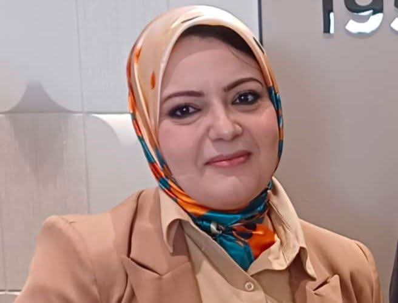
تقول السيدة أسماء: إن الصعوبة، والمعاناة في مرحلة المراهقة، تكون أشد في حالة، كان الشاب التوحدي غير ناطق، فتتحول اللغة لديه إلى لغةِ عنفٍ ويبدأ يتخذ العنفَ وسيلةً تعبيرية.
وعن العنف في هذه المرحلةِ، أشارت إلى العنف الداخلي، والمقصود به عنف الشاب مع أهله. أما العنفُ الخارجي وهو العنفُ الذي تتعرض له أسرُ المصابين بالتوحد، نتيجة نوبات غضب ابنائهم المتكررة. وأوضحت السيدة أسماء أن هذا الوضعَ يؤثر على الأُخوةِ بشكلٍ سلبي، وحتى على العلاقةِ بين الأب والأم.
🎥وأضافت أنّه في إحدى نوبات غضب ابنها عبد الله هجم عليها؛ مما نتج عنه كسر في يدها.
وحول سؤالنا عن رأيها، في المبادرات الأخيرة التي أطلقتها مؤسسة خليفة الدولية، فيما يخص إنشاءِ مراكزِ إيواءِ لمرضى التوحد، فأوضحت لنا: أن الدول المتقدمةَ، في علاج التوحد مثل: السعودية، وقطر، والبحرين اتجهت إلى إلغاء الإيواء؛ لأنّ التأهيل يجب أن يكون في كنف الأسرة، إلا في حالة عدم وجود مُعِيل للتوحدي.
وأوضحت أنه على الرغم من اللجان والهيئات اللاتي شكّلت، والتي تتبع وزارة الخدمة الاجتماعية، والبلديات فإنه –مع الأسف- لا توجد لجنة قدمت نتائجَ ملموسةً على أرض الواقع.
مؤكدة أنها اتجهت إلى الانخراط في دورات، عن تأهيل التوحد حتى تتمكنَ من استيعاب حالةِ ابنها والتعامل معه.
تحديات العلاج في الخارج
وتحدثنا مع أم أحمد، وهو شاب توحدي، تعرض للعنف في إحدى المراكز.
وبسؤالنا عن تجربتها في العلاج خارج ليبيا أجابت قائلة: اكتشفت إصابة ابني أحمد في وقت مبكر، وبسبب عدم وجود برامج متكاملة للتأهيل وتعليم التوحد في ليبيا؛ اضطررنا للسفر إلى دولة مصر. وكان الفرق شاسعا بين المراكز في مصر وفي ليبيا، من جميع النواحي ناهيك عن توفر كم كبير من الاختصاصيين في الاحتياجات الخاصة، في نوادي السباحة والخيل واللياقة البدنية، والنوادي المجهزة لاستيعاب هذه الحالات.
وأضافت أن ابنها أحمد في مصر، تحسن بشكلٍ ملحوظٍ، ولكن بسبب عدم قدرتهم على تحمل التكاليف؛ اضطروا للعودة، وعند عودتهم؛ فقد أحمد كل مهاراته، وتحول من توحد متوسط إلى توحد شديد، بسبب عدم وجود مراكز تأهيل. وهنا المعادلة الصعبة، حتى بعد رحلة العلاج بمجرد العودة يتنكس ويعودون لنقطة الصفر.
وترى أم أحمد، أن أكبر خطأ قد تقترفه الأم في حق ابنها، هو إخفاء إصابة ابنها بالمرض خوفا من نظرات المجتمع. الأمر الذي يجعلها لا ترغب في إخراجه للعالم الاجتماعي، والمناسبات والأماكن العامة، حتى لا تتعرض لنظرات الشفقة، والازدراء نتيجة سلوكياته.
وعن تجربتها في المركز بعد العودة في ليبيا قالت: ترددنا على مراكز وكانت الأسعار مبالغ فيها بدون أي فائدة تذكر، فضلا عن أنّ أحمد تعرض للعنف والإهمال في أكثر من مركز، حيث كنت أجد آثار ضرب وكدمات واضحة في جسمه بشكل متكرر وعند مواجهة المركز ينكرون علاقتهم بالضرب، هذا الأمر أثّر عليَّ وعلى أحمد نفسيًّا وعلى الأسرة بشكل كامل واليوم أحمد هو شاب توحدي يعيش بين أربع جدران.
مضيفة أنّ أكثر ما يشغل بالها –اليوم- هو خوفها من مرضه؛ لأنّ رحلة المستشفى بالنسبة لها معاناة مضاعفة بين الانتظار الطويل، وصعوبة خلع سن صغير وحتى إعطاء حقنة.
هي لا تخشى المرض بحد ذاته، بل تخشى تفاصيله المؤلمة التي تتحول إلى عبء نفسي وجسدي على ابنها، وتجعلها تتمنى أن يبقى بصحة جيدة دائمًا. هذا القلق اليومي يعكس حجم التحديات، التي تواجه أسر التوحد، حتى أبسط الإجراءات الطبية، تتحول إلى تجربة قاسية مليئة بالتوتر والبكاء.
يحتوي القسم التالي على صور توثيقية لآثار عنف جسدي تعرّض لها مصابون بالتوحد داخل مراكز رعاية. المصدر: منظمة أمل لاضطراب التوحد. الصور مؤلمة وقد لا تناسب كل القراء.
في ظل الغياب التام للدولة في ملف التوحد يعاني المصابون بالتوحد في المراكز من العنف الجسدي
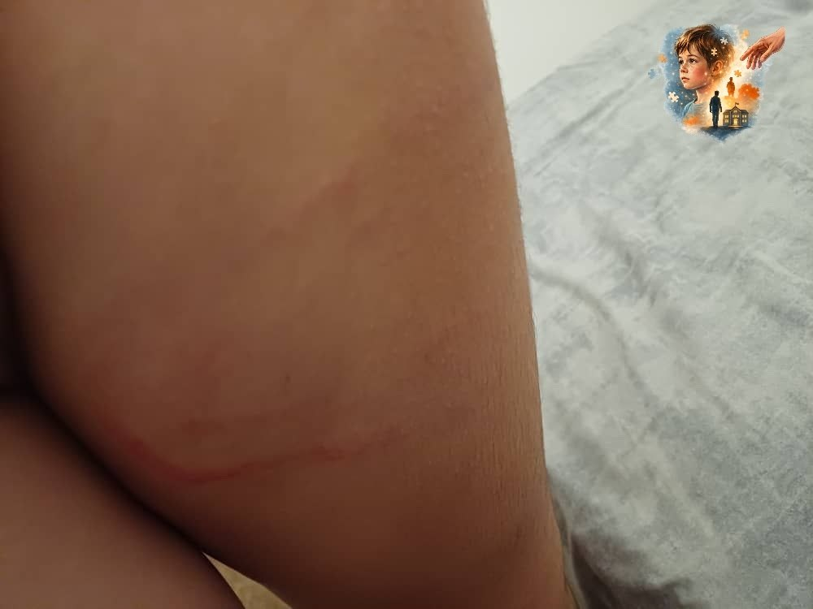
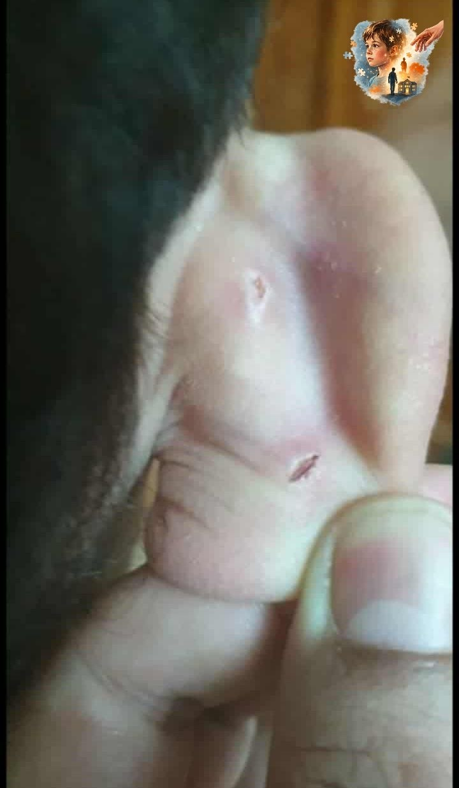
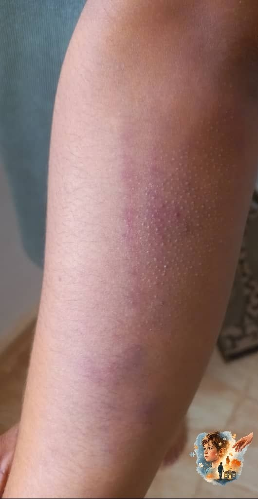
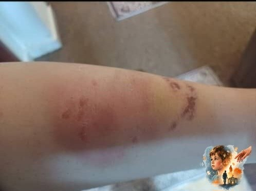
ونتيجة لعدم وجود نوادٍ، ومراكز تستقبل من هم فوق سن الخامسة عشر يحكم على المراهق التوحدي، بالعزلة عن العالم الخارجي وبالتالي؛ يصبح العنف والكبت سيد الموقف.
ولمعرفة التأثيرات النفسية، في مرحلة المراهقة للشاب التوحدي، التقينا مع اختصاصية التخاطب والنطق أ. سمية الجهمي فأوضحت لنا: أنّ مرحلة المراهقة للتوحدي حساسة، وتتطلب صبراً مضاعفا من الأسرة ومنحه الشعور بالأمان، وعدم مقارنته بالآخرين، وفي هذه المرحلة يتحول الشاب إلى قنبلة موقوتة، وتصبح الاحتياجات النفسية لدى البالغ التوحدي أكبر من أقرانه في هذه المرحلة، ويصبح أكثر حساسية للضوء، والصوت، والتجمعات، واللمس، وبسبب عدم وجود مراكز ونوادٍ مخصصة، فلا منفس لهم، وبالتالي يصبح الشاب أكثر عدوانيةً وعنفًا.
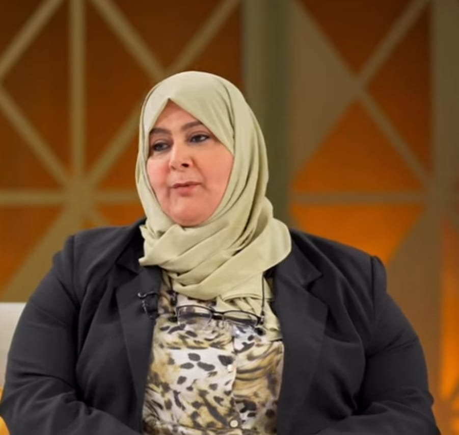
وعن كيفية تعامل الأسر مع البالغ التوحدي، أوضحت أن أهم ما يحتاجه التوحدي في هذه المرحلة، هو التكثيف للأنشطة البدنية، والترفيهية مثل السباحة، والفروسية، والجري، كذلك الأنشطة الحسية مثل اللعب بالصلصال، والرمل، أو أي أدوات ذات ملمس مختلف لتخفيف التوتر وتفريغ الطاقة والقلق، وأشارت إلى ضرورة التعامل بهدوء ولطف وتجنب استخدام العنف والضغط عليهم.
وأكدت أنّ دور الاختصاصيين، هو تخفيف الضغوط النفسية، وتقديم الإرشادات، وتوعية الأسرة بخصائص هذه المرحلة.
أسر التوحد تحت ضغط المجتمع
وعن كيفية تعامل المجتمع، مع المصابين بالتوحد، خاصةً وأن الأهل يتعرضون لمواقفَ محرجةٍ، عند خروجهم مع ابنهم الشاب التوحدي وعندما يقوم بسلوكيات التوحد النمطية؛ تزداد نظرات الاستغراب؛ وهذا ما يدفعهم الى عزل ابنهم خوفا، من هذه النظرات القاسية. تحدثنا مع الاختصاصية الاجتماعية والمستشارة الاجتماعية فردوس بوخطوة بهذا الخصوص حيث، أوضحت أن نظرة المجتمع للتوحد، ما تزال نظرة شفقة وتؤثر على والديه، بشكل كبير مما يجعلهم يشعرون بالدونية، وكأنّ ابنهم التوحدي عارٌ عليهم. وأضافت أنه في ليبيا ما يزال الوعي محدودًا جدًّا تجاه المصابين بالتوحد، مما يجعل الحملات التوعية ضرورية لتغيير الصور النمطية، عن التوحد في المجتمع، حتى يستوعب المجتمع سلوكياتِ وتصرفاتِ المصابين بالتوحد، كما يجب أن تكون هناك دورات وإرشادات خاصة، بأهالي التوحد لتدريبهم على أساليب التعامل.
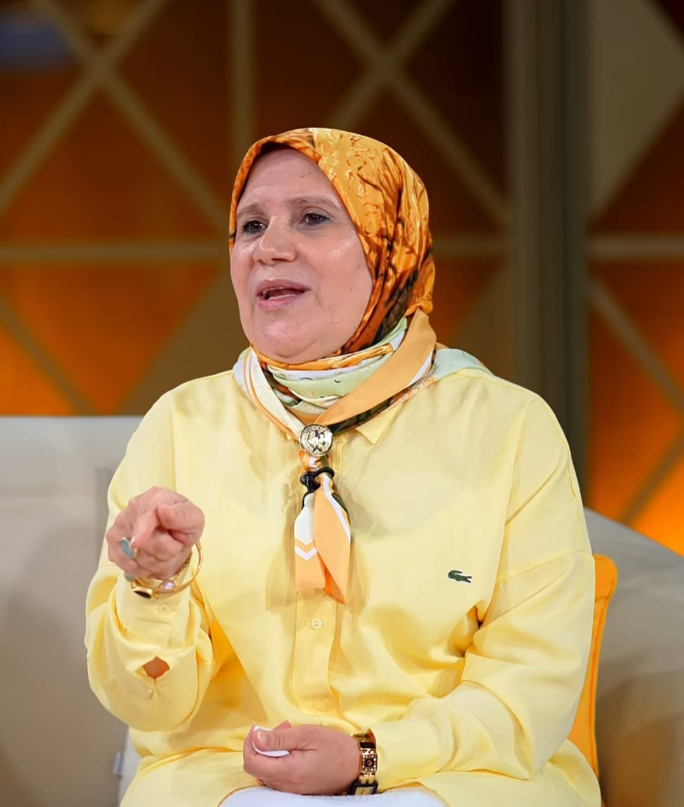
وأضافت أن الكثير من الأسر تتردد في الكشف، وطلب المساعدة لخوفها من الوصمة، ونظرة المجتمع؛ وهذا يؤدي إلى عزل المصابين بالتوحد وأهاليهم.
إحصائيات غائبة
ولمعرفة عدد المصابين بالتوحد، في ليبيا تحدثنا مع مديرة إدارة تنمية الأسرة في وزارة الشؤون الاجتماعية، والمسؤولة عن ملف التوحد في الوزارة الأستاذة عند الفايدي وأجابت، أنه لا توجد إحصائية دقيقة في ليبيا لأعداد المصابين بالتوحد، فيما تشير إلى أنه من ضمن أسباب عدم وجود إحصائيات دقيقة، لعدد المصابين بالتوحد؛ هو عزوف بعض الأسر، عن تسجيل أبنائهم لحصر العدد.
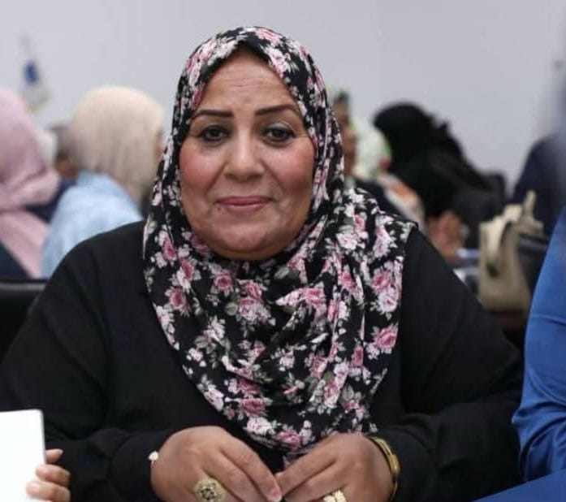
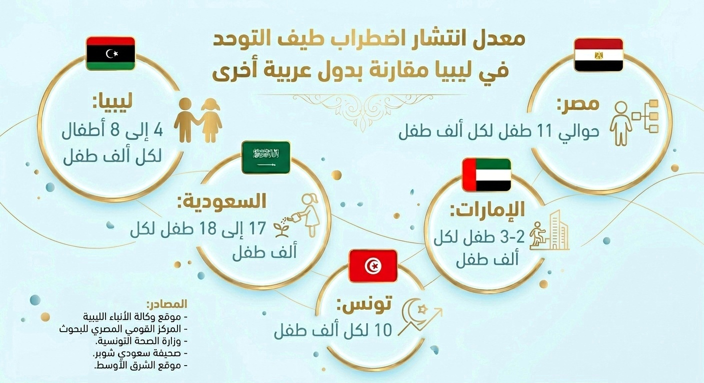
وتضيف أ. عند الفايدي إنّ أهم الأولويات، التي يجب العمل عليها، لتحسين وضع المصابين بالتوحد، خلال الفترة القادمة، تتمثل في التشخيص المبكر وزيادة، وعي المجتمع، وتأهيل الكوادر المحلية، وتوفير بيانات وإحصائيات دقيقة، وتطوير أساليب التأهيل في المراكز.
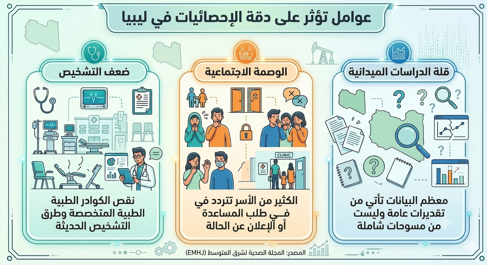
المصابين بالتوحد في ميزان التشريع
للاطلاع على الوضع القانوني، للمصابين بالتوحد التقينا بالمحامي محمد المجبري، وبسؤالنا له عن: هل يعدّ المصابون بالتوحد ضمن الفئات المشمولة بقوانين ذوي الإعاقة؟ أجاب قائلا: بحسب القانون رقم 5 لعام 1989 بموجب مادة رقم 2 التي نصت على أنّ المعاق هو من يعاني من نقص دائم يعيقه عن العمل كليًّا، أو جزئيًّا أو عن ممارسة السلوك العادي في المجتمع، سواءً كان النقص في القدرة العقلية، أم الجسدية، أم النفسية أم الحسية. فإن المصابين بالتوحد، يعدون من ضمن المشمولين بهذا القانون كونه اضطرابًا، يؤثر على التواصل، والممارسة، والتفاعل الإنساني.
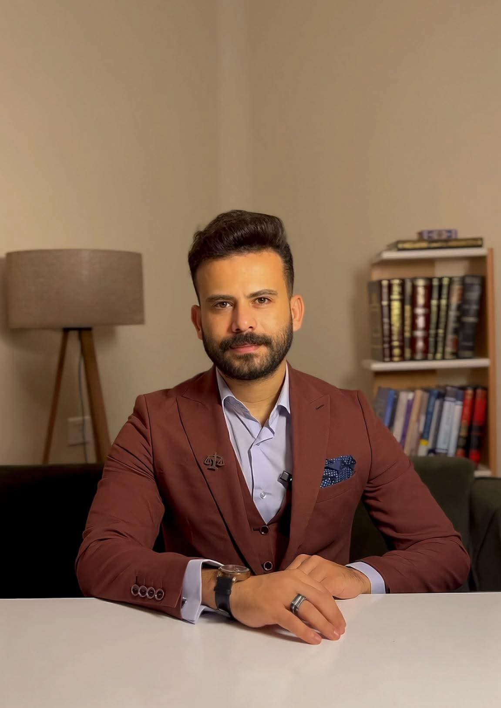
وعن تعرض مصابي التوحد للعنف، والانتهاكات أوضح أن تعرض الفئاتِ الضعيفة، وذوي الإعاقة مثل: المصابين بالتوحد للعنف، والانتهاكات يعدّ من الناحية القانونية جريمةً، وجنحةً وبالتالي يعاقب عليها القانون.
وحول سؤالنا عن الإجراءات القانونية، التي ينبغي القيام بها إذا ثبتت الواقعة، أوضح أنّ اللجنة الوطنيةَ التي تختص بحماية المعاقين، والتي تتبع الضمانَ الاجتماعي تعدّ هي جهةَ الاختصاص لتقديم الشكاوى، في حالة تعرض أي شخص من ذوي الاحتياجات الخاصة لضرر.
وأضاف أنّ من الإجراءات القانونية، التي يمكن القيام، بها في حال ثبوت الواقعة، يمكن إثبات الحالة من خلال عرض الطفل على طبيب شرعي لإعداد تقرير رسمي، يوضح تعرضه للعنف أو الانتهاك، وفي حال وجود شهادة شهود، تُعتَمد كونها دليلًا قانونيًّا، بعد ذلك يفتح محضرٌ في مركز الشرطة، ويمكن أيضا تقديم شكوى للنيابة، على أن تسبقها شكوى للجنة الوطنية المختصة بحماية ذوي الاحتياجات الخاصة.
دور الإعلام الليبي
على الرغم أن المسؤوليةَ الاعلامية، تحتم تسليطَ الضوء على هذه الفئات المهمشة والهشة، إلا أنه من خلال متابعة الإعلام الليبي يتضح لنا محدودية الاهتمام، بموضوعات التوحد، وللتعرف أكثر عن تغطية الإعلام الليبي لقضايا التوحد، تحدثنا مع الصحفي والزميل أيوب الأوجلي، مدير قسم الأخبار في قناة ليبيا الحدث، وحدثنا قائلا: الإعلام الليبي يحاول تناول قضايا التوحد، لكن ضعف الدولة والانقسام السياسي يجعل الاهتمام بها محدود، وبالتالي القائمون على المؤسسات الإعلامية يرون أنّ الأحداث الساخنة هي أكثر أهمية لتغطيتها.
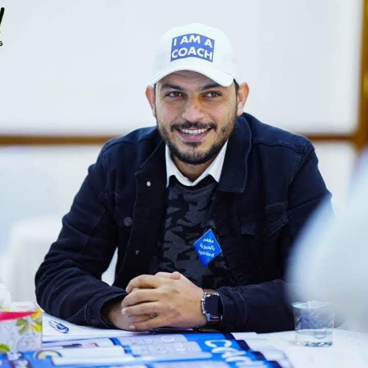
وفيما يتعلق بالتحديات التي تواجه الصحفيين، عند تغطية قضايا التوحد يقول: إن الصعوبات تبدأ من عزوف الأسر عن الظهور الإعلامي والحديث عن حالة أبنائها، كذلك غياب المؤسسات الرسمية وضعف تعاونها مع الصحفيين، والنظرة السلبية التي تعد الصحفي شخصًا متطفلًا وغير جدير بالاهتمام. ويضيف إلى ذلك غياب الإحصائيات الدقيقة والمعلومات الأساسية حول عدد المصابين، وأوضاعهم، ما يجعل مهمة الإعلام في تغطية هذه القضية أكثر تعقيدًا.
ختاما نرى أنّ ملفُ التوحد، في ليبيا يحتاج وقفةً توعويةً وإعلاميةً، وحكوميةً جادةً تحقق نتائج فعلية على أرض الواقع، بعيدا عن اللجان الشكلية، والمبادرات الفارغة، والشعارات الرنانة.
ويبقى السؤال: إلى متى سيظل المصابون بالتوحد وأسرهم يواجهون وحدهم مطرقةَ الإهمالِ وسندان العنف؟
الجواب لم يتضحْ بعد، ولكن من المؤكد أنّ استمرار تجاهل هذه الفئة سيؤدي إلى نتائجَ لا تحمد عقباها.
💬 ضع تعليقك